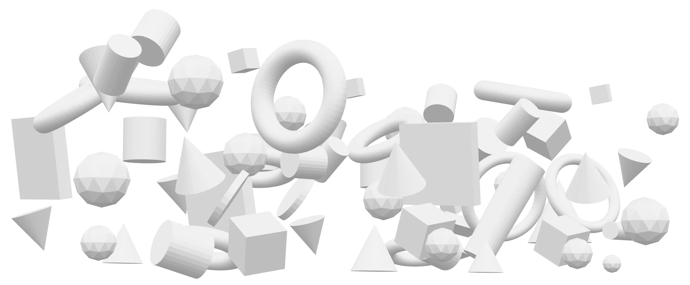

ADHDとは ------- text text text text text text text text text text text text text text text text text text text text text text text text text text text text text text text text text text text text text text text text text text text text text text text text text text text text text text text text text text text text text text text text text text text text text text text text text text text text text text text text text text text text text text text text text text text text text text text text text text text text text text text text text text text text text text text text text text text text ext text text text text text text text text text text text text text text text text text text text text text text text text text text text text text text text text text text text text text text text text text text text text text text text text ext text text text text text text text text text text text text text text text text text text text text text text text text text text text text text text text text text text text text text text text text text text text text text text text text ext text text text text text text text text text text text text text text text text text text text text text text text text text text text text text text text text text text text text text text text text text text text text text text text text ext text text text text text text text text text text text

あなたはADHDをどれほど理解していますか？
発達障害ADHD。
今やネットであるあるなどが投稿され、
知っている人も多いのではないでしょうか。
しかし、溢れているたくさんのコンテンツでは
ADHDにネガティブな印象を持つものが多い印象です。
ADHDは、本当に
ネガティブな面しか持っていないのでしょうか？
ADHDの特性を正しく理解してもらうこと。
ADHDを抱える人が、もっとADHDを好きになれること。
このサイトは、この目標のために
「知る」「見る」「触れる」「聴く」「感じる」の
5つの観点から、ADHDを伝えます。
ADHDを知る。
ADHDと聞いて、
皆さんはどんなイメージを持ちますか？
ポジティブな印象を持つ人は少ないと思います。
ADHDの見えない裏側まで、見てみましょう。
ADHDを見る。
操作して、ADHDを探検してみてください。

どうでしょう。
意外と、ネガティブな一面だけでは
なさそうではないですか？
短所は長所にもなり得る、と言うように
実は、ADHDのネガティブに捉えられる特徴も
良い方向に働いてるものもあるのです。
次はもう少し距離を縮めて、ADHDに触れてみませんか。
ADHDを触る。
操作して、ADHDの特性に触れてみてください。
ADHDの特性を持っていたとされる偉人に、
トーマス・エジソンやアインシュタイン、
レオナルド・ダ・ヴィンチ、織田信長、坂本龍馬がいることは
ご存知ですか？
ADHDの特性は、時に武器になるのです。
さあ、ADHDと生きることはどんなことか？
のぞいてみましょう。
ADHDを聴く。
ADHDの特性と向き合う人のホンネです。
ここまでご閲覧いただき、ありがとうございます。
ADHDについて、
少し変わった方面からご紹介してきました。
このコンテンツで、
あなたの意識はどこまで変わりましたか？
感じてみてください。
ADHDを感じる。
このサイトを見た人のレビューです。
次は、あなたの番です。
ADHDを理解する。
ADHDを伝える。
サイトの制作者情報です。